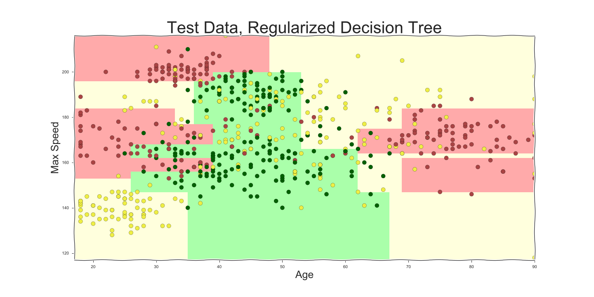

Machine Learning: das Ende der Businesslogik?
Magdeburger Developer Days, Mai 2019
Oliver Zeigermann / @DJCordhose
Programmer's approach: Code Rules by Hand
if age < 25:
if speed > 140:
return red # young people, fast cars: high risk
else:
return yellow # young people: medium risk
if age > 75:
return red # old people: high risk
if miles_per_year > 30:
return red # a lot of driving: high risk
if miles_per_year > 20:
return yellow # a bit of driving: medium risk
return green # otherwise: low risk
Approaching with data

- 0 - red: many accidents
- 1 - green: few or no accidents
- 2 - yellow: in the middle
Let's check: Is the data we have any good?
 Would we able to rank me (48) for a car having 100 mph top speed, driving 10k miles per year?
Would we able to rank me (48) for a car having 100 mph top speed, driving 10k miles per year?
Decision Boundaries

Code in Scikit-learn
Scikit-learn: most popular classic machine learning lib
Training
from sklearn.tree import DecisionTreeClassifier
clf = DecisionTreeClassifier()
clf.fit(X_train, y_train)
Prediction
y_pred = clf.predict(input)
https://colab.research.google.com/github/djcordhose/ai/blob/master/notebooks/sklearn/dt-intro.ipynb
Decision Trees

Up to 70% accuracy on unknown data
Creating a neural embedding
 =>
=>

Wrap-Up
Modern Machine Learning is an important tool for software developers- Machine Learning can learn from existing data and generalize from it
- Sometimes, it can be an alternative to explicit, classic business logic
- Reinforcement Learning does not need any static data
- Unsupervised Learning does not need a teacher knowing the ground truth
Magdeburger Developer Days 2019: Machine Learning: das Ende der Businesslogik?
Oliver Zeigermann / @DJCordhose
http://bit.ly/ml-md-intro